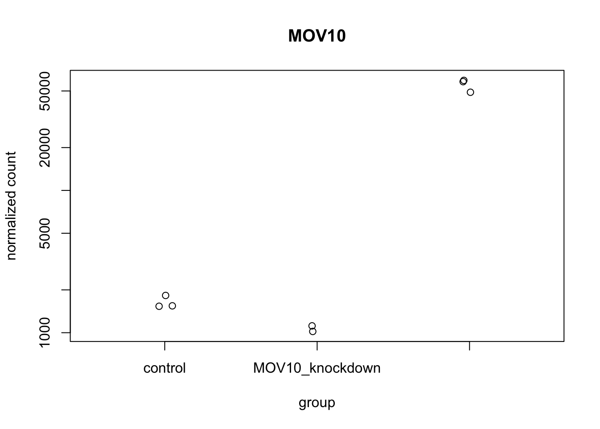
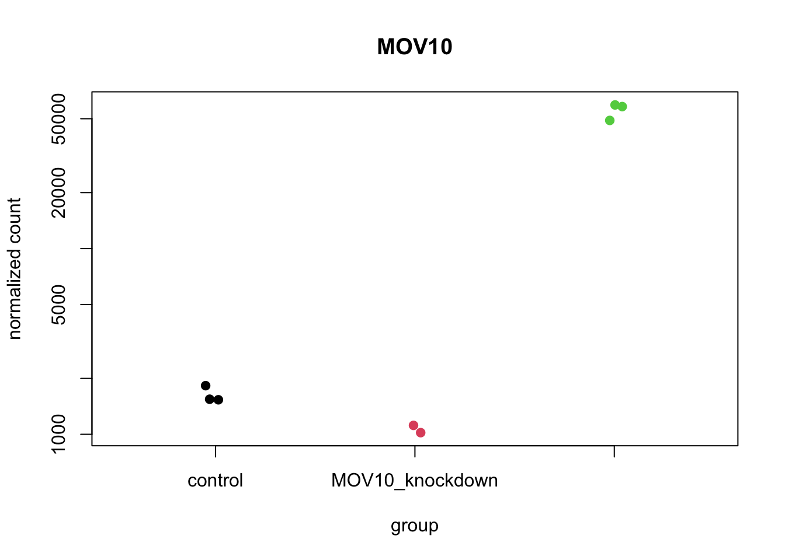
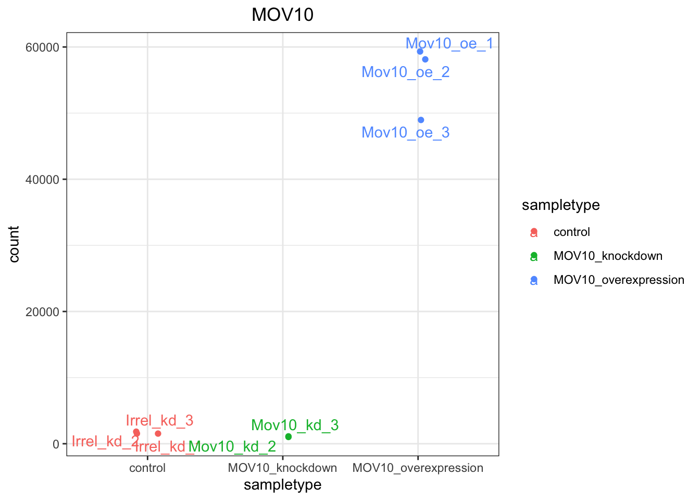
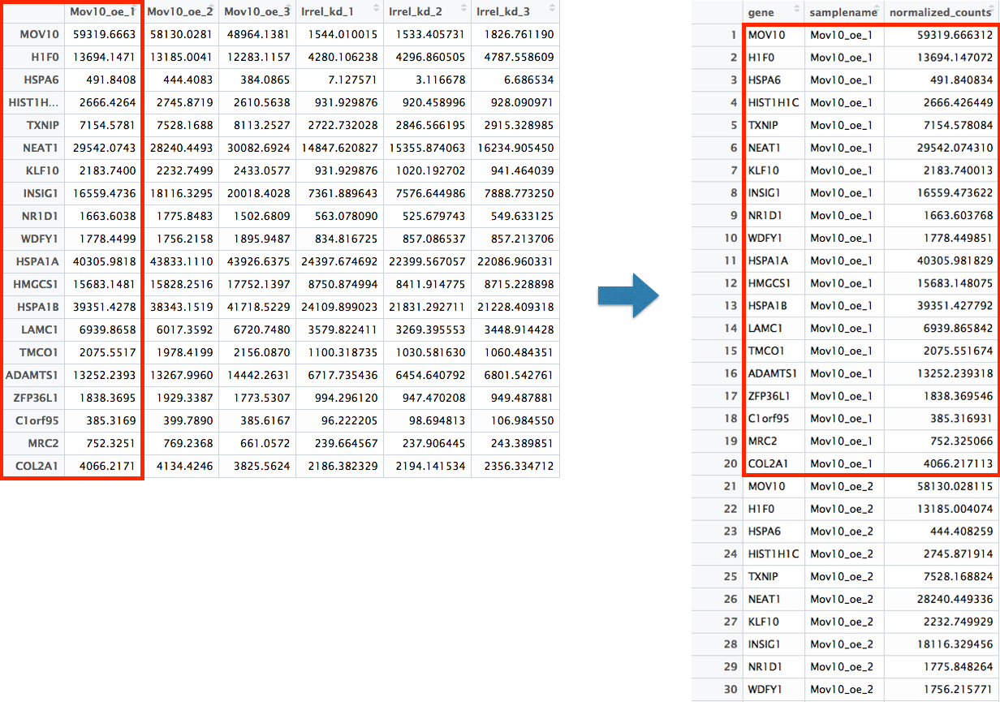
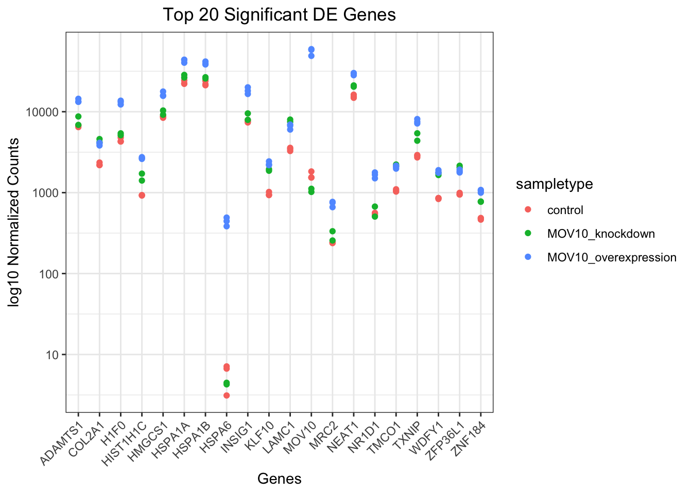
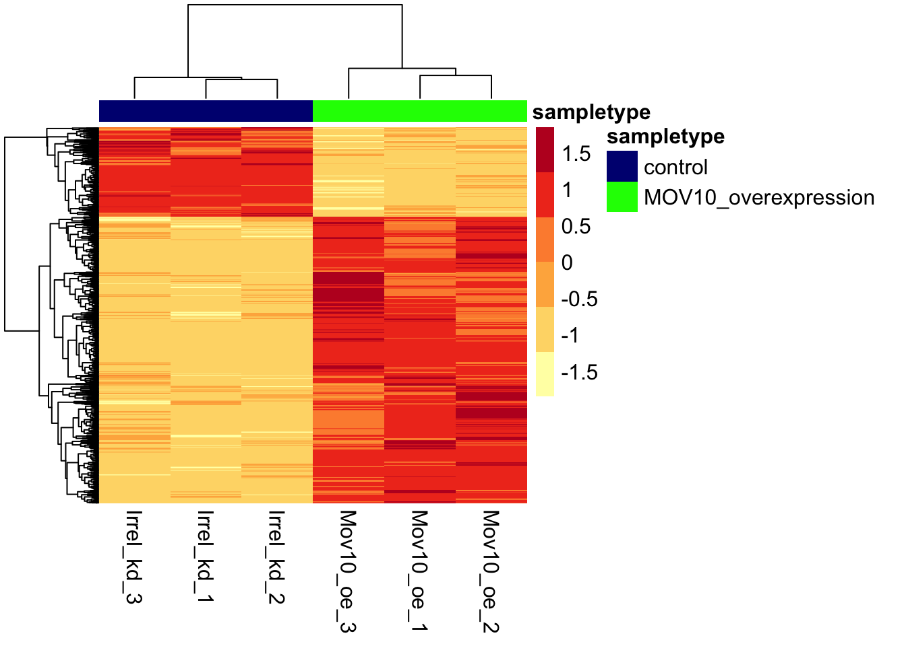
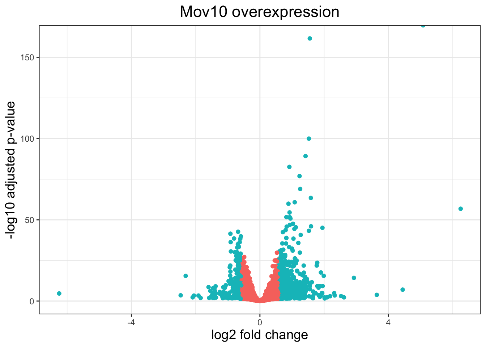
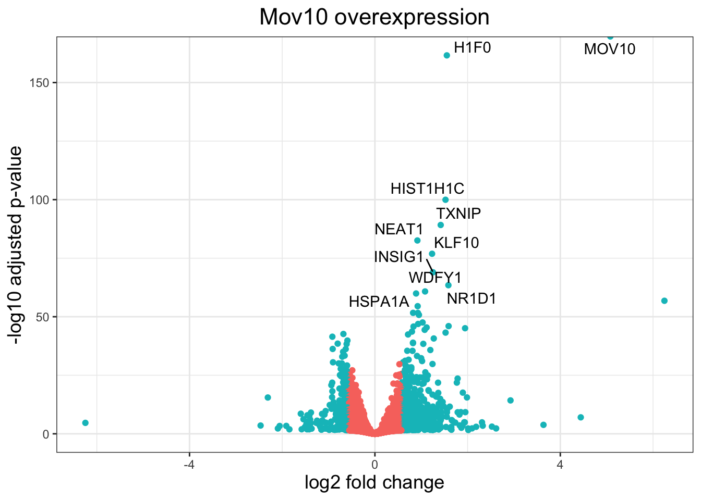

Chapter 6 Visualizing RNA-seq results
During this lesson, we will get you started with some basic and more advanced visualization techniques to explore and interpret the results of your differential expression analysis.
Let’s start by loading a few libraries:
# load libraries
library(tidyverse)
library(ggplot2)
library(ggrepel)
library(RColorBrewer)
library(DESeq2)
library(pheatmap)
library(dplyr)We will be working with three different data objects we have already created in earlier lessons:
- Metadata for our samples (a dataframe):
meta - Normalized expression data for every gene in each of our samples (a matrix):
normalized_counts - Tibble versions of the DESeq2 results we generated in the last lesson:
res_tableOE_tbandres_tableKD_tb
Let’s create tibble objects from the meta and normalized_counts data frames before we start plotting. This will enable us to use the tidyverse functionality more easily.
Check to make sure the column names of the normalized_counts matrix are the same as the row names of the meta data frame. If they are not, you will need to reorder the columns of normalized_counts to match the row names of meta.
# Read in the metadata
meta <- read.table("data/Mov10_full_meta.txt",
header=T, row.names=1)
# Create a tibble for meta data
mov10_meta <- meta %>%
rownames_to_column(var="samplename") %>%
as_tibble()
# read in the normalized counts
normalized_counts <- read.delim("data/normalized_counts.txt", row.names=1)
all(mov10_meta$samplename == colnames(normalized_counts))## [1] TRUE# Create a tibble for normalized_counts
normalized_counts <- normalized_counts %>%
data.frame() %>%
rownames_to_column(var="gene") %>%
as_tibble()6.0.1 Plotting significant DE genes
One way to visualize results would be to simply plot the expression data for a handful of genes. We could do that by picking out specific genes of interest or selecting a range of genes.
6.0.1.1 Using DESeq2 plotCounts() to plot expression of a single gene
To pick out a specific gene of interest to plot, for example MOV10, we can use the plotCounts() from DESeq2. plotCounts() is a function that allows us to plot the normalized counts for a single gene across all samples.

# We can also color the points by sample type
sampletype = as.factor(mov10_meta$sampletype)
library(RColorBrewer)
plotCounts(dds, gene="MOV10",
intgroup="sampletype",
col = as.numeric(sampletype),
pch = 19) 
This function only allows for plotting the counts of a single gene at a time.
6.0.1.2 Using ggplot2 to plot expression of a single gene
We can also use ggplot2 to plot the MOV10 counts. We can save the output of plotCounts() to a variable specifying the returnData=TRUE argument. This will save the normalized counts for the gene MOV10 to a data frame object. We can then use ggplot2 to plot the normalized counts for MOV10 across all samples.
# Save `plotCounts()` to a data frame object
d <- plotCounts(dds, gene = "MOV10", intgroup = "sampletype",
returnData=TRUE)
# Plot using ggplot2
ggplot(d, aes(x = sampletype, y = count, color = sampletype)) +
geom_point(position = position_jitter(w = 0.1,h = 0)) +
geom_text_repel(aes(label = rownames(d))) +
theme_bw() +
ggtitle("MOV10") +
theme(plot.title = element_text(hjust = 0.5))
Note that in the plot below (code above), we are using
geom_text_repel()from theggrepelpackage to label our individual points on the plot.
6.0.1.3 Using ggplot2 to plot multiple genes (e.g. top 20)
Often it is helpful to check the expression of multiple genes of interest at the same time. This often first requires some data wrangling.
We are going to plot the normalized count values for the top 20 differentially expressed genes (by padj values).
To do this, we first need to determine the gene names of our top 20 genes by ordering our results and extracting the top 20 genes (by padj values):
res_tableOE <- readRDS("data/res_tableOE.RDS")
res_tableOE_tb <- res_tableOE %>%
data.frame() %>%
rownames_to_column(var="gene") %>%
as_tibble()
## Order results by padj values
top20_sigOE_genes <- res_tableOE_tb %>%
arrange(padj) %>%
#Arrange rows by padj values
pull(gene) %>%
#Extract character vector of ordered genes
head(n=20)
#Extract the first 20 genesThen, we can extract the normalized count values for these top 20 genes:
## Normalized counts for top 20 significant genes
top20_sigOE_norm <- normalized_counts %>%
filter(gene %in% top20_sigOE_genes)Now that we have the normalized counts for each of the top 20 genes for all 8 samples, to plot using ggplot(), we need to pivot_longer top20_sigOE_norm from a wide format to a long format so the counts for all samples will be in a single column to allow us to give ggplot the one column with the values we want it to plot:
Current data format (wide): Your data has one row per gene and separate columns for each sample (like Sample1, Sample2, Sample3, etc.). This is convenient for looking at, but ggplot needs the data structured differently.
What ggplot needs (long format): ggplot works best when all the values you want to plot are in a single column, with another column identifying which sample each value came from.
What pivot_longer does: It transforms your data from:
Gene Sample1 Sample2 Sample3 GeneA 100 150 120 GeneB 200 180 220
To:
Gene Sample Count
GeneA Sample1 100
GeneA Sample2 150
GeneA Sample3 120
GeneB Sample1 200
GeneB Sample2 180
GeneB Sample3 220
Why this helps: Now ggplot can use the “Count” column for the y-axis and color/group by the “Sample” column to create your visualization.
Simple analogy: Think of it like converting a spreadsheet where data goes across columns into a list where everything is stacked vertically - making it easier for ggplot to understand what to plot.
The pivot_longer() function in the tidyr package will perform this operation and will output the normalized counts for all genes for Mov10_oe_1 listed in the first 20 rows, followed by the normalized counts for Mov10_oe_2 in the next 20 rows, so on and so forth.

# Pivot the data frame
pivoted_top20_sigOE <- top20_sigOE_norm %>%
pivot_longer(colnames(top20_sigOE_norm)[2:9],
names_to = "samplename",
values_to = "normalized_counts")
## Check the column header in the "pivoted" data frame
head(pivoted_top20_sigOE)| gene | samplename | normalized_counts |
|---|---|---|
| ADAMTS1 | Irrel_kd_1 | 6717.735 |
| ADAMTS1 | Irrel_kd_2 | 6454.641 |
| ADAMTS1 | Irrel_kd_3 | 6801.543 |
| ADAMTS1 | Mov10_kd_2 | 6869.168 |
| ADAMTS1 | Mov10_kd_3 | 8730.977 |
| ADAMTS1 | Mov10_oe_1 | 13252.239 |
Now, if we want our counts colored by sample group, then we need to combine the metadata information with the melted normalized counts data into the same data frame for input to ggplot():
inner_join(x,y) will merge 2 data frames by the colname in x that matches a column name in y in this case samplename column.
Now that we have a data frame in a format that can be utilized by ggplot easily, let’s plot!
## plot using ggplot2
ggplot(pivoted_top20_sigOE) +
geom_point(aes(x = gene, y = normalized_counts,
color = sampletype)) +
scale_y_log10() +
xlab("Genes") +
ylab("log10 Normalized Counts") +
ggtitle("Top 20 Significant DE Genes") +
theme_bw() +
theme(axis.text.x = element_text(angle = 45,
hjust = 1)) +
theme(plot.title = element_text(hjust = 0.5))
6.0.2 Heatmap
We will plot a heatmap of the sigOE genes to visualize their expression across all samples using pheatmap().
sigOE = readRDS("data/sigOE.RDS")
norm_OEsig <- normalized_counts[,c(1,2:4,7:9)] %>%
filter(gene %in% sigOE$gene) %>%
data.frame() %>%
column_to_rownames(var = "gene")
# We've moved the gene column back to the rownames to get a matrix required for pheatmapNow let’s draw the heatmap using pheatmap. We can also add annotations to the heatmap to indicate the sample type. The annotation_col argument in pheatmap()requires a data frame with the same row names as the column names of the matrix used to generate the heatmap.
### Annotate our heatmap (optional)
annotation <- mov10_meta %>%
filter(samplename %in% colnames(norm_OEsig)) %>%
dplyr::select(samplename, sampletype) %>%
data.frame(row.names = "samplename")
annotation$sampletype = factor(annotation$sampletype)
### Set a color palette
heat_colors <- brewer.pal(6, "YlOrRd")
### Set annotation colors
ann_colors = list(
sampletype = c(control="navy",
MOV10_overexpression= "green"))
### Run pheatmap
pheatmap(norm_OEsig,
annotation_colors = ann_colors,
color = heat_colors,
cluster_rows = T,
show_rownames = F,
annotation_col = annotation,
border_color = NA,
fontsize = 12,
scale = "row",
fontsize_col = 12)
NOTE: There are several additional arguments we have included in the function for aesthetics. One important one is
scale="row", in which Z-scores are plotted, rather than the actual normalized count value.
6.0.3 Volcano plots
A commonly used plot in RNA-seq analysis is the volcano plot, where log transformed adjusted p-values are plotted on the y-axis and log2 fold change values on the x-axis.
To generate a volcano plot, we first need to have a column in our results data indicating whether or not the gene is considered differentially expressed based on p-adjusted values.
## create a column for thresholding in the results table
res_tableOE_tb <- res_tableOE_tb %>%
mutate(threshold_OE = padj < 0.05 &
abs(log2FoldChange) >= 0.58)
names(res_tableOE_tb)## [1] "gene" "baseMean" "log2FoldChange" "lfcSE"
## [5] "pvalue" "padj" "threshold_OE"## [1] "gene" "baseMean" "log2FoldChange" "lfcSE"
## [5] "pvalue" "padj"##
## FALSE TRUE
## 18793 955Now we can start plotting. The geom_point object is most applicable, as this is essentially a scatter plot:
ggplot(res_tableOE_tb) +
geom_point(aes(x = log2FoldChange,
y = -log10(padj), colour = threshold_OE)) +
ggtitle("Mov10 overexpression") +
xlab("log2 fold change") +
ylab("-log10 adjusted p-value") +
theme_bw() +
theme(legend.position = "none",
plot.title = element_text(size = rel(1.5),
hjust = 0.5),
axis.title = element_text(size = rel(1.25))) 
What if we also wanted to know where the top 10 genes (lowest padj) in our DE list are located on this plot? We could label those dots with the gene name on the volcano plot using geom_text_repel().
First, we need to order the res_tableOE tibble by padj, and add an additional column to it, to include on those gene names we want to use to label the plot.
## Create a column to indicate which genes to label
res_tableOE_tb <- res_tableOE_tb %>%
arrange(padj) %>%
mutate(genelabels = "")
res_tableOE_tb$genelabels[1:10] <- res_tableOE_tb$gene[1:10]
head(res_tableOE_tb$genelabels, 20)## [1] "MOV10" "H1F0" "HIST1H1C" "TXNIP" "NEAT1" "KLF10"
## [7] "INSIG1" "NR1D1" "WDFY1" "HSPA1A" "" ""
## [13] "" "" "" "" "" ""
## [19] "" ""Next, we plot it as before with an additional layer for geom_text_repel() wherein we can specify the column of gene labels we just created.
ggplot(res_tableOE_tb, aes(x = log2FoldChange,
y = -log10(padj))) +
geom_point(aes(colour = threshold_OE)) +
geom_text_repel(aes(label = genelabels)) +
ggtitle("Mov10 overexpression") +
xlab("log2 fold change") +
ylab("-log10 adjusted p-value") +
theme_bw() +
theme(legend.position = "none",
plot.title = element_text(size = rel(1.5),
hjust = 0.5),
axis.title = element_text(size = rel(1.25))) 